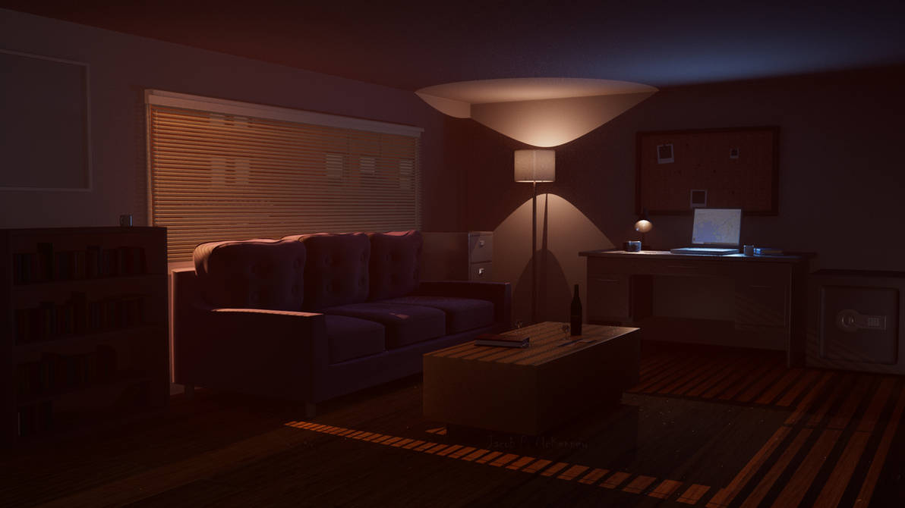
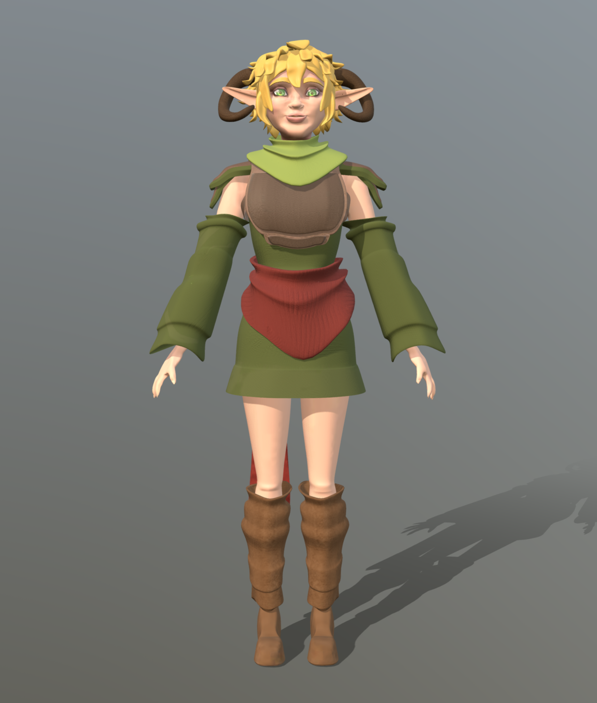
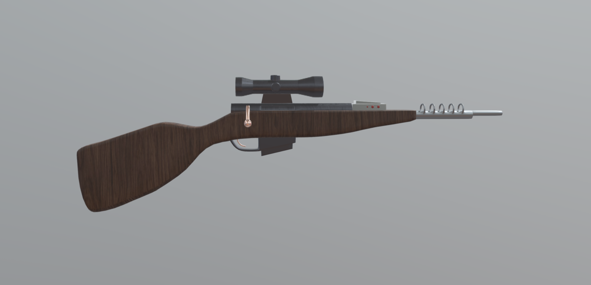
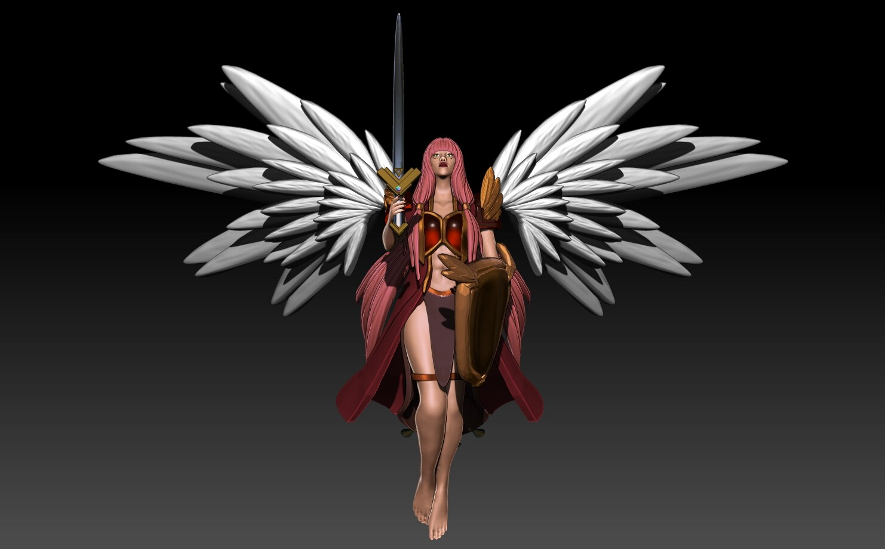
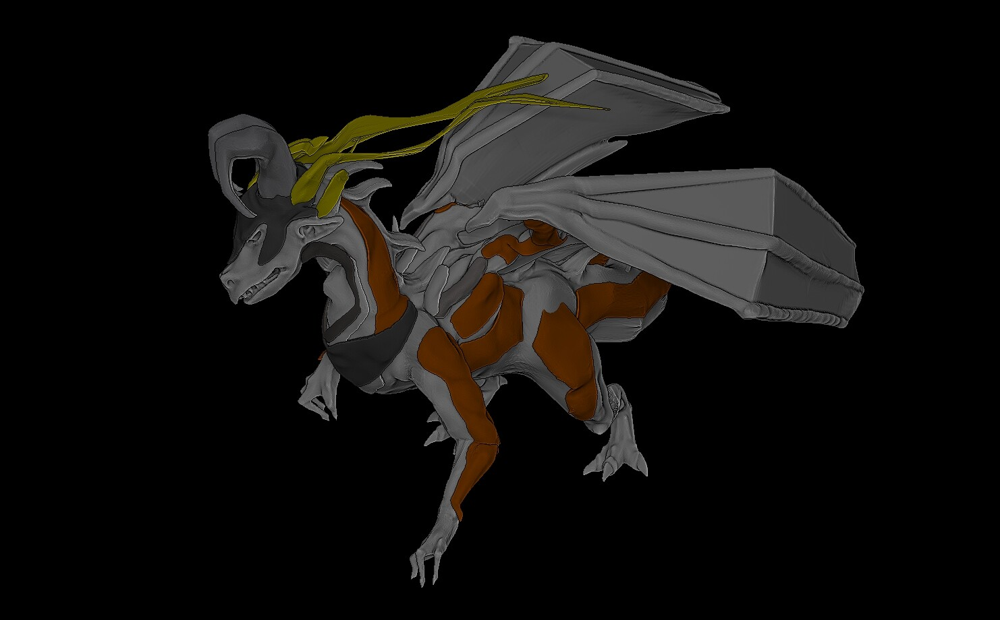
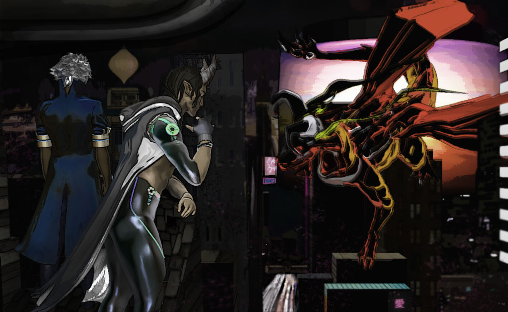

Indoor Apartment Hideout
Jacob McKenney, Artist/Designer, Senior
I made this for a college project using Maya. Everything in the image was modeled in about 2 months. While my focus is more on concept art and design, this 3D project really helped me learn a lot about 3D modeling and how it can be used for game development, while also improving my environment/level designing skills.
Lady of the Woods
Amaya Phillippi, 3D Artist, Junior
I’m Amaya, a junior who’s studying Graphic Design and Media Arts. This was my first semester working with a 3D program like Maya. I love to work on character design in my free time so I went ahead and made a model of one of my characters. I primarily illustrate but thought that expanding and trying 3D would benefit me since I wish to go into concept and/or character design.
3-D Model of a Post Modern Futuristic Sniper Rifle
Gage Lurvey, Sophomore, Beginner 3-D Artist
This project was one of our finals for 3-D modeling course. I chose to model a weapon as it has a lot of organic shapes that would be challenging my skills that I had learned through the course. This work connects to my career goals as I want to learn different aspects of art, including 3-D design. It also was a personal goal of mine to give 3-D modeling a try and bring ideas to life through creation.
Valkyrie
Lara Dionson: 3D Sculptor & Modeler
I’m Lara, a 3D sculptor. I made Valkyrie as my second ever project on the Zbrush software. Character designing has been a long time passion of mine, and 3D is a newly explored and favored platform to express my art. After having learned Zbrush for 7 months, I came to the decision of pursuing 3D modeling as a career choice. My dream job is to make 3D models for an indie game studio.
Dragon City
Lara Dionson: 3D Sculptor & Modeler
Dragon City is a compilation of very recent artworks of mine using Zbrush. It has three high poly models and several low poly models set in the cyberpunk theme. Honestly, I just wanted an excuse to render a dragon and a tiefling. This project was a joy to create, and I’ve learned many things in the process (my first time adding UV maps!). I hope to make more pieces like this in the future.
